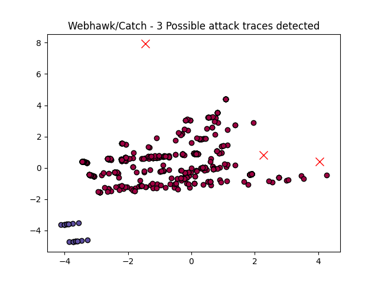

Webhawk Catch ReportUnsupervised learning Web logs/OS processes attack detection. Date: 20/06/25 at 21:29:25 GMTLog file: /Users/walid/Downloads/access.log.2025-06-12 Log type: apache logs Findings: 3 |
 |
| Severity | Related CVE(s) | Line# | LLM Insights(llama3.2) | Log line |
| High | No CVE found | 212 | The log line appears to be a potential phishing attempt, with the IP address 114.66.44.127 potentially being used by attackers to host malicious websites. The "http://secrepo.com" URL is suspicious and may be an attempt to trick users into visiting a fake website. This pattern resembles a known attack vector, related to Yahoo! Slurp botnet attacks. | 114.66.44.127 - - [12/Jun/2025:02:57:39 -0700] "GET /e/data/ecmseditor/infoeditor/plugins/smiley/images/angel_smile.png HTTP/1.1" 301 607 "http://secrepo.com" "Mozilla/5.0 (compatible# Yahoo! Slurp# http://help.yahoo.com/help/us/ysearch/slurp\xa1\xb1)" |
| High | No CVE found | 608 | The log line appears to be a legitimate web request from a user accessing their own log data, as indicated by the "self.logs" URL and successful response code 200. However, it's worth noting that this could potentially be related to the Apache Log4j vulnerability (CVE-2021-44228) which allows for arbitrary command execution via specially crafted log messages. | 123.179.187.117 - - [12/Jun/2025:10:20:08 -0700] "GET /self.logs/?C=N&O=A HTTP/1.1" 200 57108 "-" "Mozilla/5.0 (Macintosh# U# Intel Mac OS X 10_12_9 rv:5.0# mt-MT) AppleWebKit/532.7.2 (KHTML# like Gecko) Version/4.1 Safari/532.7.2" |
| High | No CVE found | 1070 | The log line appears to be a legitimate HTTP request from an iPhone device, as indicated by the user-agent string "Mozilla/5.0 (iPhone; CPU iPhone OS 13_2_3 like Mac OS X) AppleWebKit/605.1.15 (KHTML like Gecko) Version/13.0.3 Mobile/15E148 Safari/604.1". There is no obvious indication of malicious activity, and it does not appear to be related to known attacks such as Ransomware or Phishing. | 43.157.142.101 - - [12/Jun/2025:20:53:49 -0700] "GET /honeypot/Honeypot%20-%20Howto%20-%20BSides%20Austin.pdf HTTP/1.1" 429 449 "-" "Mozilla/5.0 (iPhone# CPU iPhone OS 13_2_3 like Mac OS X) AppleWebKit/605.1.15 (KHTML# like Gecko) Version/13.0.3 Mobile/15E148 Safari/604.1" |